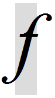
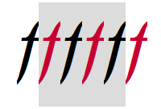
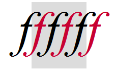
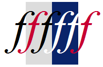
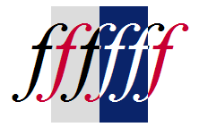
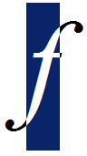
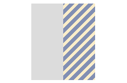
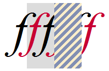
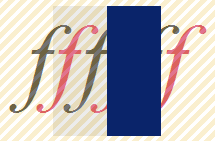
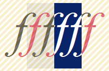

Transparent Text
前回のNeatpadチュートリアルを投稿してから約3ヶ月、このプロジェクトを開始してからも1年以上が経過しました。この間、Uniscribe APIへの移行を着実に進めてきました。このチュートリアルでは、これらの問題に焦点を当て、解決策を提案したいと思います。今回は、コードのダウンロードはありません。ここで紹介したアイデアは、次のチュートリアル（Uniscribeに関するもの）に取り入れる予定です。
Rendering text
そこで、Uniscribeをご紹介する前に、テキストレンダリングのプロセスを再確認してみたいと思います。ここでは、一般的なテキストレンダリングの概要を説明します。議論の基礎として、以下のように斜体の1文字「F」を使用します。

この画像は、灰色の長方形の背景の上に描かれた、小文字のイタリック文字「f」を表す黒いグリフを示しています。灰色の背景は、文字の外接矩形を表しています。文字が長方形の左端と右端にはみ出していることに注目してください。これらの寸法をグリフの left-bearing と right-bearing と呼ぶ。
Windowsでは、文字の幅の合計はABC幅と呼ばれる3つの値で表されます。A幅はグリフの左端のはみ出した部分の幅を表し、C幅は右端のはみ出した部分の幅を表す。B幅はグリフの範囲を表す。上記の小文字の「F」のような文字では、A幅とC幅が負の値になることが多く、文字列の一部として表示される際に、文字をより近くに配置することができます。もちろん、A幅やC幅が負の値の文字は、隣の文字が占めるスペースに重なってしまいます。この短いチュートリアルの目的は、負のA幅やC幅を持つグリフのレンダリングに関する問題を強調することです。
すべてのアプリケーション（Neatpadを含む）は、Windowsのテキスト表示API（通常はDrawTextまたはTextOut）のいずれかを使用してテキストをレンダリングします。Windowsのテキストは、2つの方法のいずれかで描画されます。背景の塗りつぶしがあるテキストは不透明なテキストと呼ばれ、背景の塗りつぶしがないテキストは透明なテキストと呼ばれます。このテキスト描画機能は、SetBkMode API、またはExtTextOut呼び出し時のETO_OPAQUEオプションで制御されます。
はみ出したグリフの問題は、文字列を小さなセグメントに分割して個別にレンダリングする場合にのみ発生します。この問題は、背景を塗りつぶす際に、グリフのはみ出した部分がオーバーペイントされ、その結果、文字が隣接する背景の矩形によって切り取られてしまうために発生します。下の画像は、テキストをペイントする2つの方法を示しています。このテキストは、個別にレンダリングされた6つの「F」で構成されており、それぞれが異なる色で表示されています。
|  |  |
| Clipping (opaque text) | No clipping (transparent text) |
左の画像は、不透明な背景塗り潰しモードでテキストを描いたものです。これは、テキストと背景が一度にレンダリングされるため、テキストを描画する最もシンプルな方法です。現在、Neatpadでは、この方法でテキストを描画しています。しかし、テキストがブロックに分割されていると問題が発生します。もちろん、この問題は、イタリック体のテキストによってさらに悪化します。ほとんどのローマン体のテキストでは、この問題は発生しません。
SetBkMode(hdc, OPAQUE);
TextOut(hdc, x, y, szText, nTextLen);
右の画像は、多色刷りのテキストを表示するための理想的な方法です。この方法でテキストを表示するためには、プロセスを2段階に分ける必要がありました。まず、背景を全体的に（左から右に）描きます。次に、背景の上にテキストを「透明に」描きます。
FillRect(hdc, &backgroundRect);
SetBkMode(hdc, TRANSPARENT);
TextOut(hdc, x, y, szText, nTextLen);
テキストを2段階に分割するとちらつきが発生するため、この副作用を改善するために、テキストを描画する際には「ダブルバッファリング」を行う必要があります。つまり、テキストの各行を画面外のバッファに描画してから視覚的に表示するのです。このような方法でテキストを描くことは非常に必要であり、私はNeatpadでこのような方向性を目指しています。しかし、ダブルバッファリング方式に移行した結果、選択ハイライトの描画方法を見直すことができました。
Drawing Selection Higlighting
選択範囲のハイライトは、少なくとも私にとっては、常にとらえどころのないテーマのようです。問題は、テキスト選択をどのように表現すべきかについて、実際には厳密なガイドラインが存在しないということです。そして、Uniscribeと「低レベル」グリフレンダリングの世界に足を踏み入れて初めて、その問題を完全に理解することができました。
以下の画像は、テキスト選択を表現する2つの主な方法を示しています。この例では、6つの「F」という同じ文字列を使用しています。しかし今回は、6つのグリフのうち2つが「選択された」と表示されており、Windowsシステムのデフォルトカラーを使用しています。
|  |  |
| Background highlighting | Inversion highlighting |
2つの基本的な戦略は、簡単に言えば、「背景の強調表示」と「反転の強調表示」です。
- 背景の強調表示は、テキスト選択を表現する最もシンプルな方法です。実際には、テキストの前景色と背景色を変更して、選択されたテキストの範囲を表現するだけでよいのです。テキストは背景の上に透過的に描かれているので、グリフが文字境界からはみ出しているのがわかります。WordpadやInternet Explorerはこの方法を採用していますし、Scintillaのような多くのテキストエディタも同様です。
- 反転ハイライトは、実現がより複雑ですが、より良い結果が得られます（私の意見ですが）。この効果は、矩形領域内のピクセルを文字通り反転させる旧来の方法に非常によく似ています。もちろん、Windows の標準的なカラースキームを維持するために、選択領域は実際に色を反転させるのではなく、普通に塗られます。また、選択ハイライトがテキストの後ろではなく、上にあるように見えます。メモ帳は、このタイプの選択ハイライトを示す非常に良い例です。
私の好みは、「反転」方式です。テキストがハイライトされているとき、選択矩形がテキストの後ろにあるのではなく、テキストの上に重なっているように考えたいのです。個人的には、背景をハイライトする方法の見た目や雰囲気が好きではありません。Windowsの典型的なカラースキーム（白の背景、白の選択テキスト）のため、選択ハイライトが移動すると、一部の選択テキストが消えてしまうようです。この例をよく見ると、この効果がよくわかります。選択された2つの文字が白いので、白い背景に重なると、文字が切り捨てられたように見えます。私はNeatpadの「反転」方法に移行していますが、それは単にその方がプロフェッショナルに見えるからです。

反転ハイライト」のプロセスは、思ったよりも複雑です。ここで問題となるのは、はみ出した文字の問題です。上の例では、文字が選択された状態で表示されていますが、前縁と後縁が非選択領域に入っているため、別の色で塗装する必要があります。このキャラクターを選択状態で表示するには、キャラクター本体と、左右に張り出した部分を別々にレンダリングする必要があります。この問題を解決するために、私は以下のような3段階のレンダリング戦略を採用しています。
|  | |
| 1a. Background | 1b. Mask selected areas |
最初の段階では、シンプルなフラットフィルを使って背景を描きます。すべてのキャラクターは、この方法で通常の境界線を描き、通常のエリアと選択されたエリアの両方がレンダリングされます。ここで重要なのは、この初期段階でのクリッピングの使い方です。選択された領域は、ペイントされた直後にマスクされます。これは、ExcludeClipRect APIを使用して、現在のデバイスコンテキストのクリッピング領域から選択領域を取り除くことを意味します。この詳細が重要である理由は、すぐに明らかになります。
|  |  |
| 2a. Normal text | 2b. Invert mask |
背景の全体（すべての文字／グリフ）が描かれたら、第2段階として、その上にテキストをレンダリングします。テキストの描画には、透明な描画モードが使用されます（SetBkModeにTRANSPARENTを設定）。最初の処理でクリッピング領域が作成されているため、選択された（青い）領域は、テキストがその上に描画される際に保護されます。
テキストが描画されると、デバイスコンテキストのクリッピング領域が反転され（ExtSelectClipRgn with RGN_XOR）、その結果、選択された領域がマスクされなくなります。レンダリングされたばかりのテキストは、その後の描画操作から保護されます。
|  | |
| 3a. Selected text | 3b. The result |
最後の段階は、テキストの再描画です。全く同じテキストが、先ほど描いたテキストの上に直接描かれます。今回の違いは、テキストが単色で描かれていることです。システムハイライトの色（つまり白）を使っています。クリッピング領域を作成したため、今回は選択された領域（青）のみが変更されます。クリッピング領域を取り除くと、描画が完了します。結果として、ワープロソフトに適した高品質のテキスト出力が得られます。
この方法を成立させるためには、クリッピングの使い方がポイントになります。テキストが引き伸ばされているように見えますが、クリッピング領域を慎重に使用しているため、実際には引き伸ばされていません。重要なのは、ClearTypeやその他のアンチエイリアシングが有効になっている場合、このようなクリッピングの使用が絶対に必要だということです。上記の方法でクリッピングを使用すると、テキストを2回描画しようとしても、この「オーバードロー」から保護されます。
もちろん、この方法でテキストをレンダリングすることには常に問題があります。3回のパスを実行すると、かなりの量のフリッカーが発生し、基本的にすべてのテキストを描画する際にはダブルバッファリングを使用しなければなりません。また、テキストを2回描画することで、パフォーマンスが低下する可能性もあります。ほとんどの場合、テキストを2回描画することはありません（テキストに選択範囲がない場合や、すべてのテキストが選択されている場合など）。
ここで説明した方法は、初めての人にはかなり奇妙に見えるかもしれませんが、それほど珍しいものではないことをお約束します。ScriptString API (そのために Notepad のようなアプリ) は、これとまったく同じ方法を使っていますし、「反転法」を使うテキスト編集パッケージは、これとよく似た方法を使っていると考えていいでしょう。要するに、私が選んだ方法に代わるものはないのです。高品質なテキスト表示を目指すのであれば、譲歩しなければなりません。
Coming up in Part 11!
ここでは、極端な例を挙げています。ローマン書体のほとんどの英語テキストは、このような複雑なレンダリングを必要としないでしょう。しかし、私たちはあらゆる形式のテキスト（特に、よりエキゾチックなUnicodeスクリプト）をサポートしなければならないため、この時点から適切に処理しなければなりません。実際、Uniscribeでのレンダリングには反転法が完全に必要です。
このチュートリアルは、今後の展開を予告するものです。反転ハイライトの技術は、Uniscribe APIへの移行に伴い、Neatpadのテキスト表示エンジンに組み込まれる予定です。